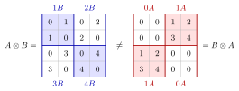

Unlike the ordinary matrix product, the Kronecker product is defined for matrices of any sizes, and the dimensions multiply: every entry of A is replaced by a whole copy of B. Entry by entry, (A⊗B)(i−1)p+k,(j−1)q+l=aijbkl.

The figure uses A=(1324) and B=(0110) from the examples. In A⊗B each entry aij becomes the block aijB; in B⊗A each entry bkl becomes bklA. Both are 4×4 with the same entries, but arranged differently, so the product is not commutative.
It is the natural tool for linear maps acting on matrices or on two indices at once.
The product is not commutative: A⊗B and B⊗A have the same size and the same entries, but in a different arrangement. They differ by a reordering of rows and columns (they are similar via a permutation matrix when both factors are square).
Bilinear and associative: (A+A′)⊗B=A⊗B+A′⊗B,(cA)⊗B=c(A⊗B),(A⊗B)⊗C=A⊗(B⊗C).
Mixed product: (A⊗B)(C⊗D)=(AC)⊗(BD) whenever AC and BD are defined.
(A⊗B)⊤=A⊤⊗B⊤; if A,B are invertible, (A⊗B)−1=A−1⊗B−1.
For A(n×n) with eigenvaluesλi and B(p×p) with eigenvalues μk, the eigenvalues of A⊗B are the np products λiμk; if Ax=λx and By=μy then (A⊗B)(x⊗y)=λμ(x⊗y).
Hence the determinant and trace satisfy det(A⊗B)=(detA)p(detB)n and tr(A⊗B)=trA⋅trB. For any sizes, the rank satisfies rank(A⊗B)=rankA⋅rankB.
Beyond the course
Econometrics texts often pair the Kronecker product with the vec operator, which stacks the columns of a matrix into one long vector. The vec operator is not part of Math V.